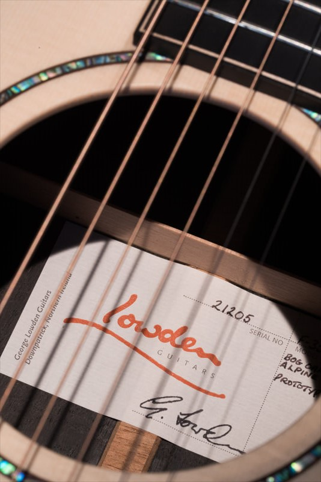

{{ _("The Lowden guitar is the result of unique design, workmanship and
assembly techniques along with our choice of woods.")}}

{{ _("History of Lowden")}}
{{ _("In the late 1980’s George Lowden accepted an invitation to visit the main Lowden dealer
for
Switzerland, Servette Music in Geneva. Upon his arrival, co-proprietor Yves Imer thanked
George for coming, because some of the Lowden customers he was to meet had not realised he
actually existed – they thought “George Lowden” was merely the figment of some marketing
man’s imagination – a leprechaun, in fact! This served to enlighten George to the principle
that an ‘information vacuum’ will always be filled – sometimes benignly, sometimes
bizarrely.")}}
{{ _("Lowden's Guitar")}}
{{ _("Design") }}
{{ _("Curvy, smooth soundbox shapes combined with carefully voiced internal bracing and
soundbox profiles, and use of natural wood...")}}
{{ _("Workmanship") }}
{{ _("Introducing unplanned or unmitigated stress into any musical instrument deadens the
tonal response. Our assembly techniques...
close
involve the use of hand tools to improve the quality of all joints and enable the
“Dolphin Profile” voicing of the soundboard bracing. This and many more design and
technique factors ensure that sustain, volume and balance are not hindered in any way.
No short cuts are possible, just great workmanship and attention to detail!")}}
{{ _("Wood") }}
{{ _("We still hand-split our bracing stock and re-grade soundboard wood. We scour the world
for the best (and often most decorative)...
close
tonewoods which are the real ‘stars’ of our guitars, and not man made. It is this
combination of many details which determines how our guitars sound, feel, and play.
Today more than ever, I am constantly evaluating our guitars and striving to further
adjust the voicing, the feel and the playability. To make Lowden guitars we need
individuals with a talent for focus and an eye for detail plus a passionate commitment
to no compromise. We have built a team of real craftsmen who build Lowden guitars by
hand using Japanese chisels, planes, knives and spokeshaves. We are currently building a
state of the art jig and tool department to ensure our craftsmen can fine tune their
skills and understanding of wood, and in so doing create guitars which feel and sound
like individual ‘works of art’.")}}
{#
#}
{#
Support
#}
{#
Id sagittis, lectus nunc, nulla. Nisi amet convallis accumsan, accumsan, tellus. Varius#}
{# aliquam sit eget vivamus aliquam vitae volutpat nullam varius.#}
{#